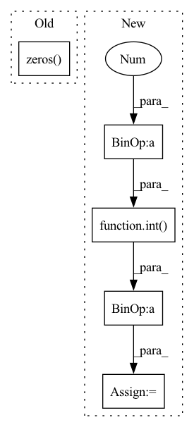

Pattern ID :27247

Before Change
self.linear_param1 = torch.nn.Parameter(torch.zeros((depth, 3 * hidden_features, hidden_features)))
self.out_linear = torch.nn.Parameter(torch.randn((1, 2 * hidden_features ** 2, out_features)))
self.register_buffer("hidden_state", torch.zeros(1, 2 * hidden_features, hidden_features))
self.register_buffer("embedding", torch.ones((input_cases, hidden_features, hidden_features)))
for idx in range(depth):
After Change
self.hidden_features = hidden_features
features_sqrt = int(hidden_features ** 0.5)
self.linear_param0 = torch.nn.Parameter(torch.zeros((depth, 3 * hidden_features, hidden_features)))
self.linear_param1 = torch.nn.Parameter(torch.zeros((depth, 3 * hidden_features, hidden_features)))
self.out_linear = torch.nn.Parameter(torch.randn((1, 2 * hidden_features, out_features)))
self.embedding = torch.nn.Parameter(torch.randn((input_cases, hidden_features)).mul(0.004))
for idx in range(depth):
for sub_idx in range(3):
torch.nn.init.orthogonal_(
self.linear_param0[idx][sub_idx * hidden_features:(1 + sub_idx) * hidden_features])
torch.nn.init.orthogonal_(
self.linear_param1[idx][sub_idx * hidden_features:(1 + sub_idx) * hidden_features])
hidden_state = torch.randn(1, 2 * features_sqrt, features_sqrt)
hidden_state[0, :features_sqrt] = hidden_state[0, :features_sqrt].qr().Q
hidden_state[0, features_sqrt:] = hidden_state[0, features_sqrt:].qr().Q
self.register_buffer("hidden_state", hidden_state.clone())
self.depth = depth
In pattern: SUPERPATTERN
Frequency: 3
Non-data size: 5
Instances
Fragment ID: 80944178
Project Name: homebrewnlp/homebrewnlp
Commit Name: e6bfdfa67ff9b5477696711d7d570685448ee141
Time: 2021-06-20
Author: 39779310+ClashLuke@users.noreply.github.com
File Name: module.py
M Class Name: FixedRevRNN
N Class Name: FixedRevRNN
M Method Name: __init__(8)
N Method Name: __init__(8)
M Parent Class: torch.nn.Module
N Parent Class: torch.nn.Module
M File Name: module.py
N File Name: module.py
M Start Line: 101
M End Line: 127
N Start Line: 109
N End Line: 132
'>
Before Change
self.ks = 3
def __call__(self,img):
kernel_motion_blur = np.zeros((self.ks, self.ks))
kernel_motion_blur[int((self.ks - 1) / 2), :] = np.ones(self.ks)
kernel_motion_blur = kernel_motion_blur / self.ks
img_lrmotion = cv2.filter2D(img, -1, kernel_motion_blur)
return img_lrmotion
After Change
def __call__(self,img):
ks = self.ks[np.random.randint(0,len(self.ks))]
kernel_motion_blur = np.zeros((ks, ks))
kernel_motion_blur[int((ks - 1) / 2), :] = np.ones(ks)
kernel_motion_blur = kernel_motion_blur / ks
img_lrmotion = cv2.filter2D(img, -1, kernel_motion_blur)
return img_lrmotion
'>
Fragment ID: 80944176
Project Name: deepvac/deepvac
Commit Name: 7ba10b89fd515304edca8dfc14476791c55546d0
Time: 2020-09-07
Author: 18801481780@163.com
File Name: deepvac/syszux_aug.py
M Class Name: LRmotionAug
N Class Name: LRmotionAug
M Method Name: __call__(2)
N Method Name: __call__(2)
M Parent Class: AugBase
N Parent Class: AugBase
M File Name: deepvac/syszux_aug.py
N File Name: deepvac/syszux_aug.py
M Start Line: 161
M End Line: 163
N Start Line: 162
N End Line: 165
'>
Before Change
self.ks = 3
def __call__(self, img):
kernel_motion_blur = np.zeros((self.ks, self.ks))
kernel_motion_blur[:, int((self.ks - 1) / 2)] = np.ones(self.ks)
kernel_motion_blur = kernel_motion_blur / self.ks
img_udmotion = cv2.filter2D(img, -1, kernel_motion_blur)
return img_udmotion
After Change
def __call__(self, img):
ks = self.ks[np.random.randint(0,len(self.ks))]
kernel_motion_blur = np.zeros((ks, ks))
kernel_motion_blur[:, int((ks - 1) / 2)] = np.ones(ks)
kernel_motion_blur = kernel_motion_blur / ks
img_udmotion = cv2.filter2D(img, -1, kernel_motion_blur)
return img_udmotion
'>
Fragment ID: 80944175
Project Name: deepvac/deepvac
Commit Name: 7ba10b89fd515304edca8dfc14476791c55546d0
Time: 2020-09-07
Author: 18801481780@163.com
File Name: deepvac/syszux_aug.py
M Class Name: UDmotionAug
N Class Name: UDmotionAug
M Method Name: __call__(2)
N Method Name: __call__(2)
M Parent Class: AugBase
N Parent Class: AugBase
M File Name: deepvac/syszux_aug.py
N File Name: deepvac/syszux_aug.py
M Start Line: 176
M End Line: 178
N Start Line: 178
N End Line: 181